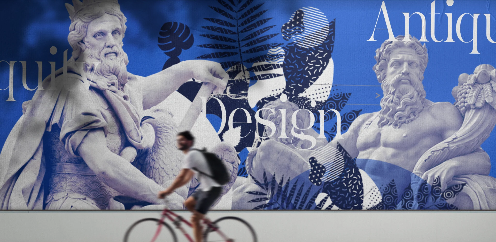
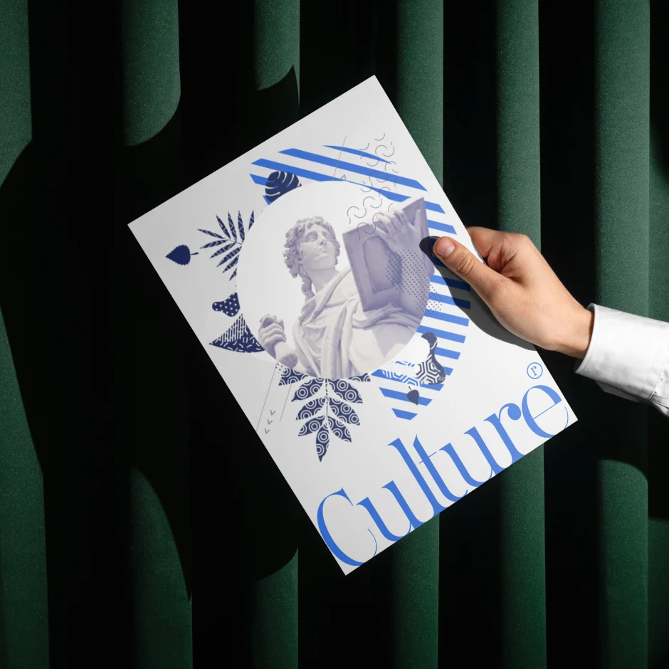
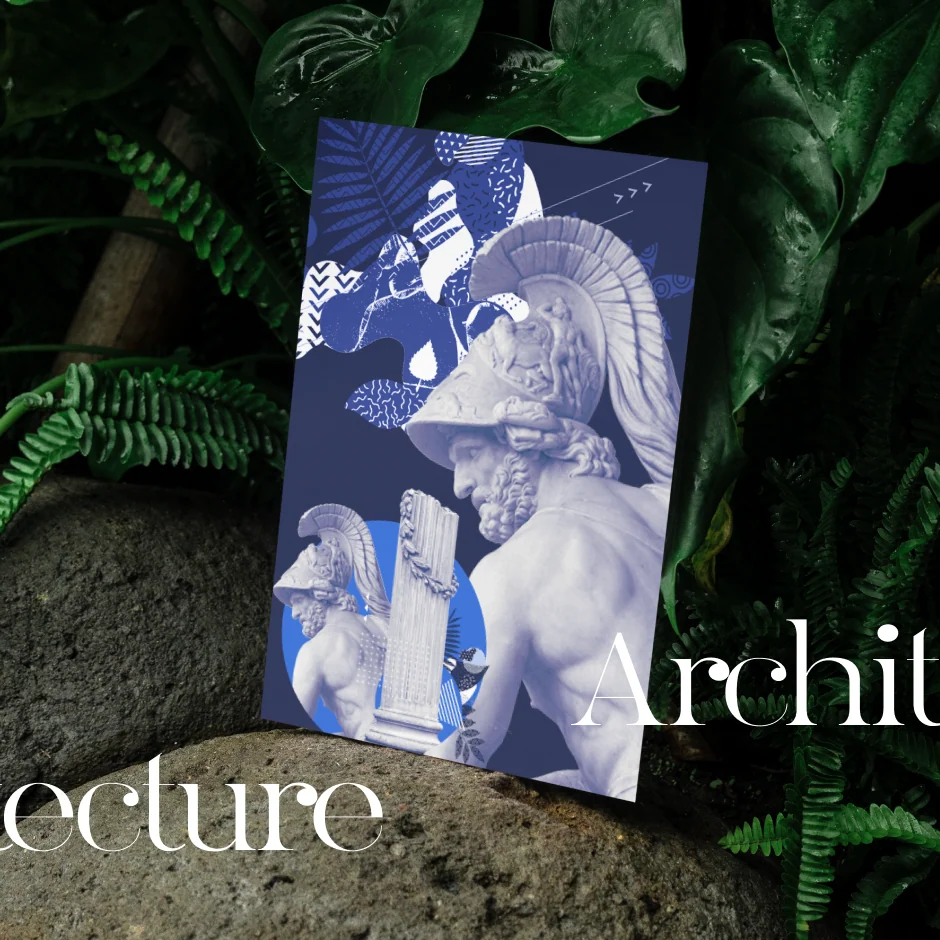
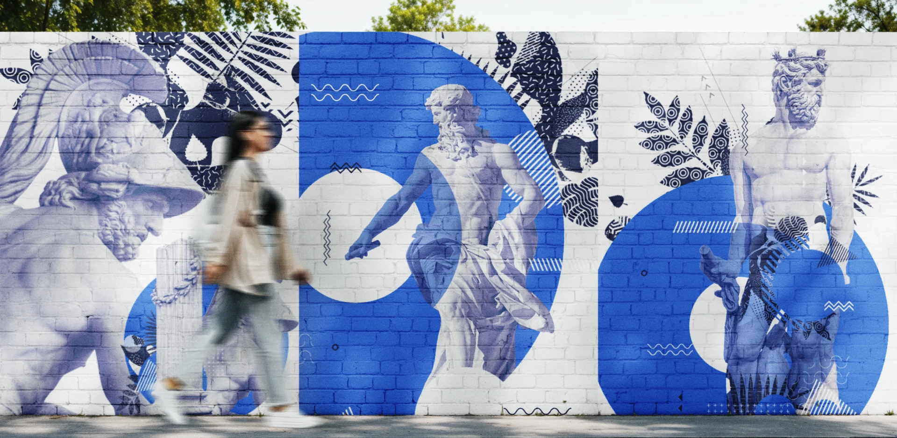

Маркетинг кит
Клиент
Veonix Studio
Год
2023
Роль
Арт-директор
конверсия в сделку
×2.3
время на КП
−40%
слайдов в системе
48
Айдентика, вдохновлённая вневременной эстетикой античности.
Как арт-директор и ведущий дизайнер я построил проект на образах классических статуй и древнеримской архитектуры, переосмыслив их по-современному.
Нужно было соединить элегантность античности со смелым современным подходом — и получить идентичность, которая ощущается одновременно вечной и абсолютно актуальной.
Помимо полного дизайна сайта, я собрал широкий набор печатных материалов — брошюры, флаеры, редакционные развороты — и форматы для наружной рекламы.
Сложился цельный визуальный язык, который одинаково уверенно держится и в цифровой среде, и в печати.




Следующий проект · 08
Pos Credit